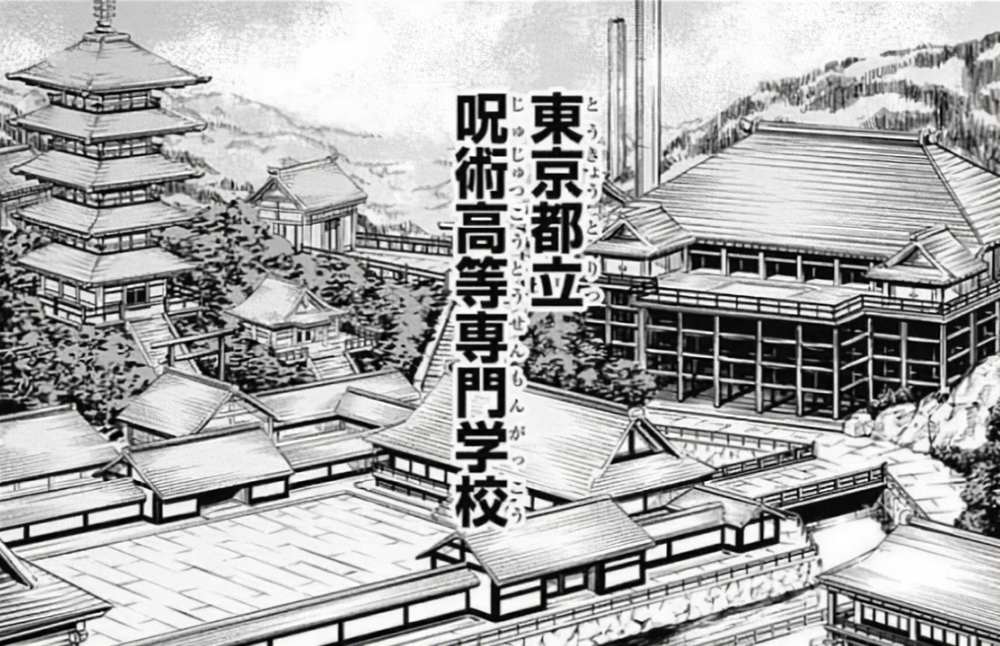

Colegio Técnico de Magia Metropolitana de Tokio
Es una de las dos instituciones que enseñan Jujutsu en Japón. Opera bajo la fachada de una escuela religiosa privada mientras que en la realidad, se dedica de pleno a educar a la próxima generación de chamanes de jujutsu. La escuela secundaria de Jujutsu de la prefectura de Tokio, está conformada por un gran campus compuesto de varios edificios con arquitectura tradicional japonesa. Tiene un patio abierto, muchas aulas, dormitorios y áreas de práctica para Jujutsu, todo el recinto es protegido por las barreras de Tengen. Los superiores de la escuela proporcionan mediación y leyes que deben de seguir todos los hechiceros de Jujutsu. Esta escuela sirve, tanto como escuela para chamanes en entrenamiento, como también como base de operaciones para toda la comunidad de Jujutsu. Muchos chamanes de Jujutsu operan directamente fuera de la escuela incluso después de graduarse. A menudo los graduados actúan como tutores y muchos de ellos son empleados como maestros, estos, tal y como los estudiantes, si lo desean pueden vivir en las instalaciones del colegio. También dentro de las instalaciones cuentan con un dormitorio para no-chamanes, en el vive una madre que se encarga de hacer la comida a los estudiantes, solamente si lo piden previamente. El plan de estudios es de cuatro años. Las asignaciones regulares, como cualquier otro colegio tiene, se las enseñan las ventanas, y el entrenamiento respecto al Jujutsu, se lo enseñan otros chamanes, estos les enseñan información sobre la existencia de la energia maldita, como también el conocimiento para desarrollar una técnica maldita. A los estudiantes también se les enseña acerca del sistema de clasificación del poder del Jujutsu, y cómo se aplican tanto a las maldiciones como a los hechiceros de Jujutsu. Para el entrenamiento, los estudiantes a menudo son enviados a realizar misiones de campo para perfeccionar sus habilidades, todo esto bajo la supervisión de sus maestros o asistentes auxiliares. El maestro designado por un estudiante supervisa sus regimientos de entrenamiento, así como las misiones a las que serán asignados.